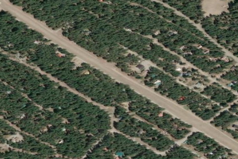

LOST RIVER
W12 · WA

Aerial imagery source: Esri, Vantor, Earthstar Geographics, and the GIS User Community
| Identifier | W12 |
|---|---|
| State | WA |
| Runway length | 3,150 ft |
| Runway width | 85 ft |
| Surface | TURF-GRVL |
| Runway | 11/29 |
| Elevation | 2,415 ft |
| Ownership | private |
| CTAF | 122.9 |
| Coordinates | 48.64958416, -120.50204444 |
Notes
[shortfield] Location Overview Lost River Airport (identifier W12) sits about five miles northwest of the small town of Mazama, in the upper Methow Valley of Okanogan County, near the confluence of the Methow and Lost Rivers. The setting is classic North Cascades high country: a narrow mountain valley ringed by forested ridges and peaks, with the runway oriented northwest-southeast along the valley floor at roughly 2,400 feet elevation. The strip and surrounding land form a private fly-in residential community, with home lots and access roads running alongside the runway on both sides. Camping & Recreation There's no public campground or visitor facility at the airstrip itself — it's private property tied to the Lost River Airport Association homeowners' community, and the runway closes seasonally through the winter. That said, the location puts pilots and visitors close to some of Washington's best backcountry recreation: the Methow Valley's extensive trail network for hiking and cross-country skiing, the town of Winthrop for lodging and supplies, and the North Cascades National Park and Okanogan-Wenatchee National Forest for climbing, fishing, and wilderness camping, all within a short drive. Notes & Warnings The runway is turf/gravel, about 3,150 feet long, and unattended, with no fuel, maintenance, or airframe services available on site. Tall trees (60+ feet) line both sides of the runway in the primary surface, and the field is surrounded by mountainous terrain, so density altitude, wind shear, and obstacle clearance deserve careful attention. Because it doubles as a residential road network, vehicles, pedestrians, and pets regularly cross the runway and taxiways, so extra vigilance is required on approach and rollout. The airport is closed annually from November 1 through April 1, and there are no published instrument procedures, making it a fair-weather, VFR-only destination. History Lost River Airport dates to around 1960, when the strip was carved out along the Lost River as the centerpiece of a planned fly-in community — a model, popular in the mid-20th century American West, where private landowners could taxi from their own driveways to a shared backcountry runway. Over the decades it grew into an established residential enclave governed by the Lost River Airport Association, which today manages the airstrip, roads, water system, and shared community infrastructure. The area has also had to contend with the region's periodic wildfire activity, with the community coordinating fire-safety and evacuation planning in recent years as part of its ongoing stewardship of the property.